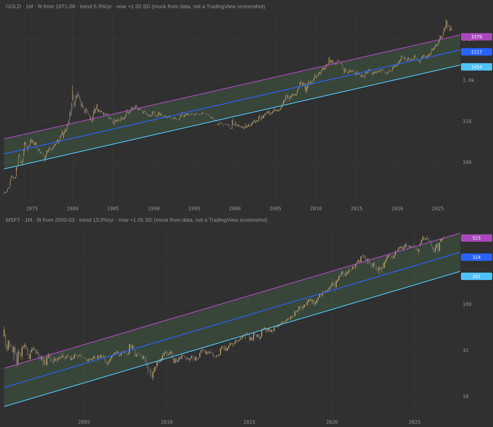

One indicator for gold, silver, stocks and coins. It reads the ticker and picks the start date and the curve for you.
| Symbol | Fit starts | Curve | Why |
|---|---|---|---|
| Gold (GOLD, XAU) | Aug 1971 | Straight on a log chart | Before that the price was fixed by law |
| Silver (SILVER, XAG) | Jul 1968 | Straight on a log chart | The Treasury capped the price until 1967–68 |
| Stocks and ETFs | First bar (listing) | Straight on a log chart | A steady growth rate |
| Crypto | First bar | Curved (power law), like the ETH band | Growth slows as the coin ages |
Every choice can be overridden in the settings: Fit from, Time axis, Band width, Outer bands, Carry the lines forward and the colours.

// This Pine Script® code is subject to the terms of the Mozilla Public License 2.0 at https://mozilla.org/MPL/2.0/
//
// Logarithmic regression band — gold, silver, and any stock or coin.
//
// ln(price) = a + b·t fitted by least squares, t in years since "Fit from"
// band = exp(fit ± k·SD of the residuals)
//
// Look (2026-10-14, at the user's request): three lines like the usual ETH log-regression
// band — upper, regression, lower — with one fill between them, the lines carried into the
// future, and their values on the price scale. Outer ±2 SD lines are optional. The fit
// itself is the one study 7 used.
//
// Start date ("Auto" picks it from the ticker):
// - gold 1971-08: before Nixon closed the gold window the price was fixed by law ($20.67,
// then $35), so it says nothing about a market trend. TVC:GOLD goes back to 1833.
// - silver 1968-07: the US Treasury sold silver at $1.29 until 1967, capping the price,
// and silver certificates stopped being redeemable on 1968-06-24.
// - everything else (stocks, coins): the first bar on the chart (IPO / listing).
//
// Time axis ("Auto"): linear time (a steady growth rate, a straight line on a log chart)
// for metals and stocks; log time (a power law since the first day, the curved shape of
// the crypto bands) for crypto. Either can be forced.
//
// Two ways to fit, and the difference matters:
// - "All data" (default since 2026-10-14, for the ETH look): one fit through the whole
// history to today, drawn back over the past. History is fitted with hindsight and the
// past is redrawn every bar. "Price stayed above the band for years" is partly that.
// - "Past only": each bar's band uses only the prices up to that bar — what the indicator
// really said at the time.
// On the last bar both are the same fit, so today's reading does not depend on the mode.
//
// Evidence: gold since 1971 and silver since 1968 have had two or three full cycles — too
// few for statistics (reports/study7-gold.txt, study7-silver.txt). For stocks the band is
// untested, and only today's survivors have charts: a stock that fell below its band and
// never came back is not on anyone's screen.
//@version=6
indicator("Log Regression Band", shorttitle = "LogReg Band", overlay = true, max_polylines_count = 12)
startPreset = input.string("Auto", "Fit from", options = ["Auto", "Custom"], inline = "s", tooltip = "Auto: silver (SILVER / XAG) from 1968-07, gold (GOLD / XAU) from 1971-08, anything else from its first bar.")
customStart = input.time(timestamp("1971-08-01T00:00:00"), "", inline = "s")
axisIn = input.string("Auto", "Time axis", options = ["Auto", "Linear time (exponential trend)", "Log time (power law)"], tooltip = "Auto: log time for crypto, linear time for everything else.")
mode = input.string("All data (redraws history)", "Fit", options = ["All data (redraws history)", "Past only"])
minYearsIn = input.float(0.0, "Past only: years of data before the band is drawn (0 = auto)", minval = 0.0, tooltip = "Auto: 20 years for gold and silver, 8 for everything else.")
k1 = input.float(1.0, "Band width (SD)", minval = 0.25, step = 0.25)
showOuter = input.bool(false, "Outer bands")
k2 = input.float(2.0, "Outer bands (SD)", minval = 0.25, step = 0.25)
projYears = input.float(1.0, "Carry the lines forward (years)", minval = 0.0, step = 0.5)
showTable = input.bool(true, "Show table")
cUp = input.color(#AB47BC, "Upper", group = "Colours")
cMid = input.color(#2962FF, "Regression", group = "Colours")
cLo = input.color(#4FC3F7, "Lower", group = "Colours")
cFill = input.color(color.new(#66BB6A, 84), "Band fill", group = "Colours")
cOuterUp = input.color(#EF5350, "Outer upper", group = "Colours")
cOuterLo = input.color(#26A69A, "Outer lower", group = "Colours")
bool notStock = syminfo.type != "stock" and syminfo.type != "fund"
bool isSilver = notStock and (str.contains(syminfo.ticker, "SILVER") or str.contains(syminfo.ticker, "XAG"))
bool isGold = notStock and (str.contains(syminfo.ticker, "GOLD") or str.contains(syminfo.ticker, "XAU"))
int startTime = startPreset == "Custom" ? customStart : isSilver ? timestamp("1968-07-01T00:00:00") : isGold ? timestamp("1971-08-01T00:00:00") : 0
float minYears = minYearsIn > 0 ? minYearsIn : (isSilver or isGold) ? 20.0 : 8.0
const float YEAR_MS = 365.2425 * 24.0 * 3600.0 * 1000.0
bool logTime = axisIn == "Log time (power law)" or (axisIn == "Auto" and syminfo.type == "crypto")
bool pastMode = mode == "Past only"
// ---------------------------------------------------------------- running least squares
var float n = 0.0
var float sx = 0.0
var float sy = 0.0
var float sxx = 0.0
var float sxy = 0.0
var float syy = 0.0
var int firstTime = na
var array<int> fitTimes = array.new<int>()
bool inFit = time >= startTime and close > 0
if inFit and na(firstTime)
firstTime := time
// years since the first fitted bar (Auto) or since the chosen start
int origin = startTime > 0 ? startTime : nz(firstTime, time)
xOf(float t) =>
float yrs = (t - origin) / YEAR_MS
logTime ? math.log(yrs + 1.0) : yrs
float x = xOf(time)
float y = math.log(close)
if inFit
n += 1.0
sx += x
sy += y
sxx += x * x
sxy += x * y
syy += y * y
fitTimes.push(time)
float den = n * sxx - sx * sx
float b = n > 2 and den != 0 ? (n * sxy - sx * sy) / den : na
float a = n > 2 ? (sy - b * sx) / n : na
float sse = a * a * n + b * b * sxx + syy + 2.0 * a * b * sx - 2.0 * a * sy - 2.0 * b * sxy
float sd = n > 2 ? math.sqrt(math.max(sse, 0.0) / (n - 2.0)) : na
bool ready = inFit and not na(sd) and (time - firstTime) / YEAR_MS >= minYears
float mid = a + b * x
float z = (y - mid) / sd
// ---------------------------------------------------------------- Past only: plotted bar by bar
// In "All data" mode these plots carry only the last bar, which puts today's values on the
// price scale; the lines themselves are polylines drawn below.
bool drawPast = pastMode and ready
bool lastOnly = not pastMode and barstate.islast and not na(sd)
bool show = drawPast or lastOnly
pU1 = plot(show ? math.exp(mid + k1 * sd) : na, "Upper", cUp, 2)
pMd = plot(show ? math.exp(mid) : na, "Regression", cMid, 2)
pL1 = plot(show ? math.exp(mid - k1 * sd) : na, "Lower", cLo, 2)
plot(show and showOuter ? math.exp(mid + k2 * sd) : na, "Outer upper", cOuterUp, 1, plot.style_line)
plot(show and showOuter ? math.exp(mid - k2 * sd) : na, "Outer lower", cOuterLo, 1, plot.style_line)
fill(pU1, pL1, drawPast ? cFill : na)
// ---------------------------------------------------------------- lines over the whole history + forward
var array<polyline> drawn = array.new<polyline>()
pointsAt(array<int> times, float offset) =>
array<chart.point> pts = array.new<chart.point>()
int size = times.size()
int stride = math.max(1, int(math.ceil(size / 2000.0)))
for i = 0 to size - 1 by stride
int t = times.get(i)
pts.push(chart.point.from_time(t, math.exp(a + b * xOf(t) + offset)))
if (size - 1) % stride != 0
int tLast = times.get(size - 1)
pts.push(chart.point.from_time(tLast, math.exp(a + b * xOf(tLast) + offset)))
pts
forward(float offset) =>
array<chart.point> pts = array.new<chart.point>()
for i = 0 to 24
int t = time + int(projYears * YEAR_MS * i / 24.0)
pts.push(chart.point.from_time(t, math.exp(a + b * xOf(t) + offset)))
pts
if barstate.islast and not na(sd) and fitTimes.size() > 1
for p in drawn
p.delete()
drawn.clear()
// the lines: whole history in "All data", plus the forward part in both modes
array<float> offsets = array.from(k1 * sd, 0.0, -k1 * sd, k2 * sd, -k2 * sd)
array<color> colors = array.from(cUp, cMid, cLo, cOuterUp, cOuterLo)
for j = 0 to 4
if j < 3 or showOuter
array<chart.point> pts = array.new<chart.point>()
if not pastMode
pts := pointsAt(fitTimes, offsets.get(j))
if projYears > 0
pts.concat(forward(offsets.get(j)))
if pts.size() > 1
drawn.push(polyline.new(pts, xloc = xloc.bar_time, line_color = colors.get(j), line_width = j < 3 ? 2 : 1, line_style = j < 3 ? line.style_solid : line.style_dotted))
// the fill: one closed shape, upper line out and lower line back
array<chart.point> upper = array.new<chart.point>()
array<chart.point> lower = array.new<chart.point>()
if not pastMode
upper := pointsAt(fitTimes, k1 * sd)
lower := pointsAt(fitTimes, -k1 * sd)
if projYears > 0
upper.concat(forward(k1 * sd))
lower.concat(forward(-k1 * sd))
if upper.size() > 1
lower.reverse()
upper.concat(lower)
drawn.push(polyline.new(upper, closed = true, xloc = xloc.bar_time, line_color = color.new(cFill, 100), fill_color = cFill))
// ---------------------------------------------------------------- table (same in both modes)
zone(float zz) =>
zz < -k1 ? "Below the band" : zz <= k1 ? "Inside the band" : "Above the band"
var table info = table.new(position.top_right, 2, 6, bgcolor = chart.bg_color, border_width = 1)
if showTable and barstate.islast and not na(sd)
table.cell(info, 0, 0, "Fit", text_color = color.gray)
table.cell(info, 1, 0, (pastMode ? "Past only" : "All data (hindsight)") + ", " + (logTime ? "log time" : "linear time") + ", from " + str.format_time(firstTime, "yyyy-MM"), text_color = chart.fg_color)
table.cell(info, 0, 1, logTime ? "Power-law exponent" : "Trend growth per year", text_color = color.gray)
table.cell(info, 1, 1, logTime ? str.tostring(b, "0.00") : str.tostring((math.exp(b) - 1.0) * 100.0, "0.0") + "%", text_color = chart.fg_color)
table.cell(info, 0, 2, "Position now", text_color = color.gray)
table.cell(info, 1, 2, (z >= 0 ? "+" : "") + str.tostring(z, "0.00") + " SD — " + zone(z), text_color = z < -k1 ? cLo : z > k1 ? cUp : chart.fg_color)
table.cell(info, 0, 3, "Regression today", text_color = color.gray)
table.cell(info, 1, 3, str.tostring(math.exp(mid), format.mintick), text_color = cMid)
table.cell(info, 0, 4, "Band", text_color = color.gray)
table.cell(info, 1, 4, str.tostring(math.exp(mid - k1 * sd), format.mintick) + " – " + str.tostring(math.exp(mid + k1 * sd), format.mintick), text_color = chart.fg_color)
table.cell(info, 0, 5, "SD of residuals", text_color = color.gray)
table.cell(info, 1, 5, str.tostring(sd, "0.000") + " (×" + str.tostring(math.exp(sd), "0.00") + " per SD)", text_color = chart.fg_color)
All data, draws one line through the whole history to today. The past is fitted with hindsight and moves a little every month. Switch Fit to Past only to see what the band said at each date.